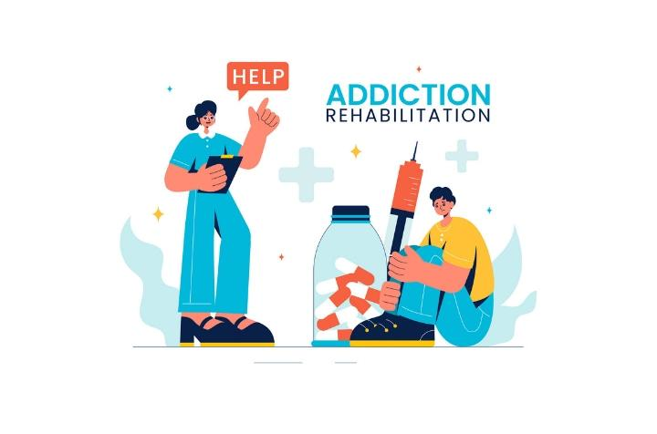
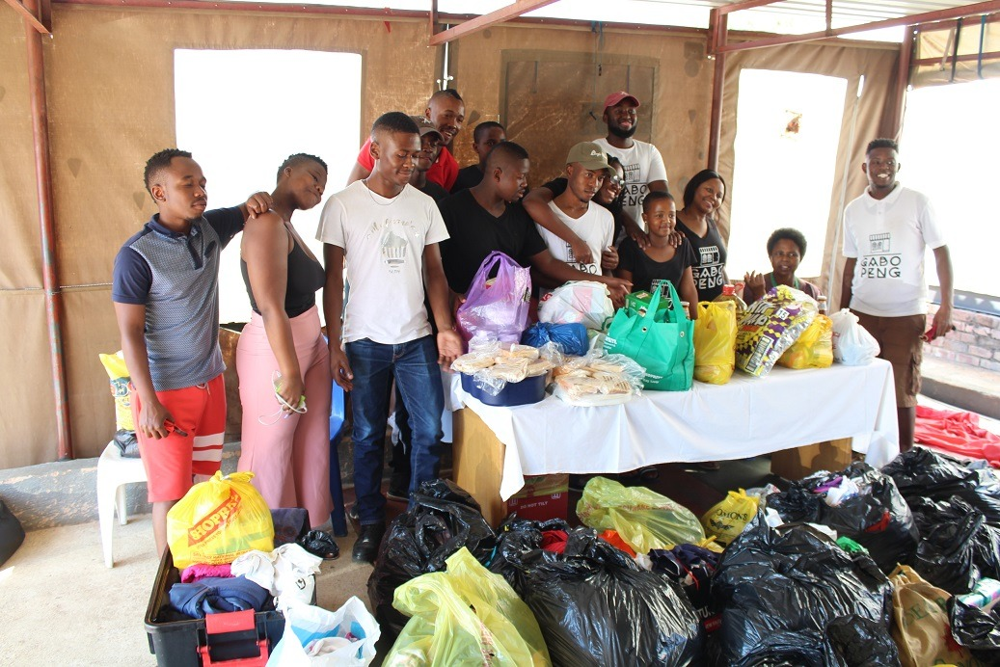
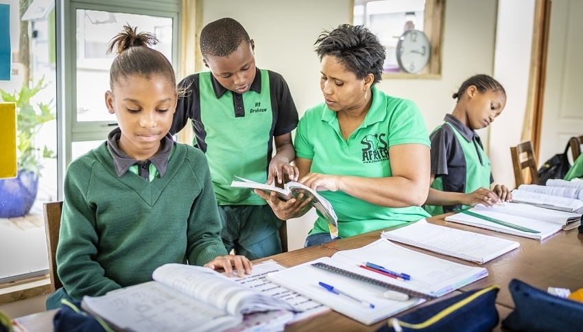
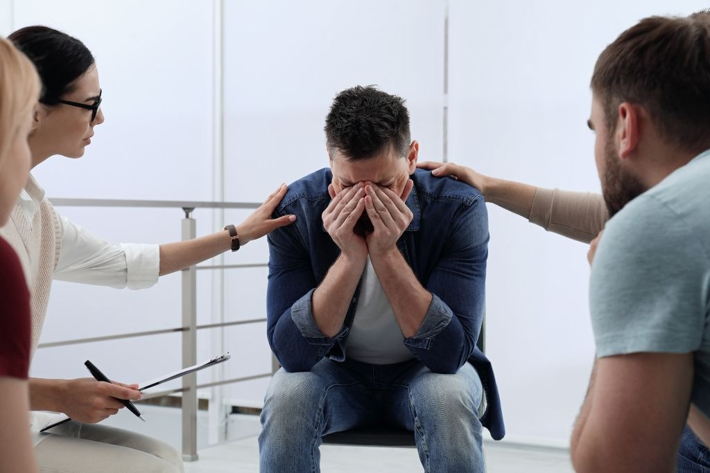
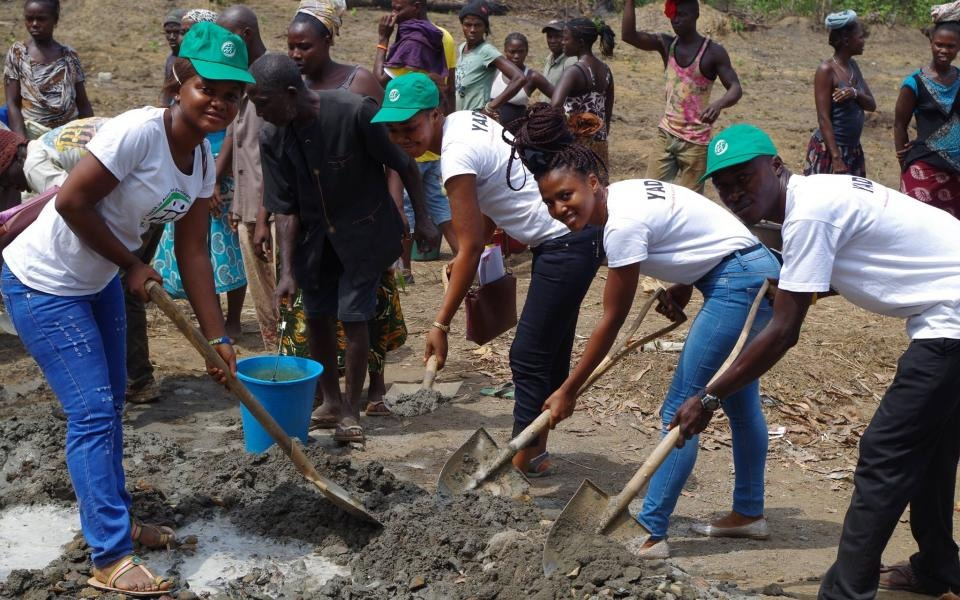

Healing Lives • Restoring Hope • Building Futures
The Safe Haven for Healing and Hope Foundation is a holistic initiative that provides a drug recovery program that supports individuals who are struggling from drug addiction. It may be Over-The-Counter (OTC) drugs or prescribed drugs. As we all know, drug addiction affects everyone regardless of the age due to different reasons namely: peer pressure; psychological factors like stress, trauma; family matters; poverty; lack of awareness and many more. Our organization is there to provide a well structured and supportive environment where individuals are guided through their recovery journey. We cater for people from the age of 18 years and upwards.
Moreover, this program works hand in hand with the psychological support program as heavy substance abuse may stem from deeper, underlying mental health and social issues. As a result, therapy sessions are offered as part of the overall recovery journey or treatment plan to address the root causes thoroughly. The aim of this program is not only to treat addiction but also to provide a foundation built on respect, encouragement of self-worth, and unwavering support for people striving to make sustainable changes in their behavior.

From day one, safety becomes a quiet promise for individuals left behind. Our Street Children Support Program focuses on giving care, protection, and support to abandoned and homeless people as this will be able to uplift them. This foundation creates an environment where people are effectively provided a secure atmosphere that prevents them from harm, neglect, and abuse. The program focuses on people's basic needs like shelter, food, and clothing.
Living on the streets changes a person over time, shaped by constant hardship and being left out. Because of this, children get help to handle tough memories and start feeling safe again. Dignity grows slowly, fed by consistency more than words. Each child finds moments that say they matter, simply because they exist. These paths open doors meant to last.

One way to help people facing hardship is by giving them real chances to learn. Because without school, many individuals get stuck in tough situations that just keep repeating. Learning opens doors - simple as that. Some young folks miss classrooms not by choice but because life gets in the way. Money problems, family stress, or where they live can block their path. This effort steps in when systems fail. It lines up resources so students actually show up and stay. Knowledge becomes possible again, even when everything else says no. Growth begins quietly - with books, teachers, presence.
Fueled by steady backing, this program helps students reach higher in school while growing as individuals. Confidence builds here - along with sharper judgment and ownership of what lies ahead. Because help never stops, people gain knowledge that sticks, standing stronger on their own two feet.

When life feels heavy, people get help here. A quiet space opens up where words flow easier. Talking becomes possible because judgment stays out. Hard moments like grief or confusion find room to unfold. Being heard matters most when the world feels loud. Stories come out slowly, often starting with silence. Trust builds when secrets stay protected. Emotions shift once someone listens without flinching. Moments of panic or doubt meet steady presence. Identity questions land softly in this setting. No labels stick. No pressure pushes. Just time. Safety isn't promised - it shows up in small ways. Whispers grow stronger on days nothing else does.
People get help here when life feels heavy. A quiet space opens up where words flow easier. Talking becomes possible because judgment stays out. Hard moments like grief or confusion find room to unfold. Being heard matters most when the world feels loud. Stories come out slowly, often starting with silence. Trust builds when secrets stay protected. Emotions shift once someone listens without flinching. Moments of panic or doubt meet steady presence. Identity questions land softly in this setting. No labels stick. No pressure pushes. Just time. Safety isn't promised - it shows up in small ways. Whispers grow stronger on days nothing else does.
Starting strong, this program helps people grow tougher through clear thinking about themselves. It hands out expert advice so folks can make sense of tough moments while learning better ways to handle stress. What stands out most? Support lands right where it matters - especially for those managing HIV or AIDS. Talking openly gets attention here, along with truly embracing who you are. Confidence builds quietly when support feels personal and real.

Young folks help build stronger neighborhoods when given real chances to grow. Because tomorrow depends on today's choices, support flows toward skill building, confidence, self direction. When teens step up, show up, take part, community life deepens. Learning happens outside classrooms too - through doing, leading, listening. Growth shows not just in jobs filled but voices heard, ideas shared, bridges built. What matters most? Showing up with care, staying open, moving forward together. Real change begins small, close, human.
What stands out is how the effort lifts communities by tackling real issues like joblessness, unfairness, and missing essentials. Tools grow through training, guidance, support circles - people gain what they need to build better lives while lifting others around them. Connection thrives when neighbors work together, trust builds slowly, strength lasts beyond a single moment.
